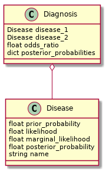

The Pox Probabilities
Table of Contents
Beginning
This is a look at calculating which is more likely for a patient with spots on his face - chicken pox or measles. It's an example adapted from the book Bayes' Rule (see below).
Imports
Python
from argparse import Namespace
from math import isclose
import sys
PyPi
from hypothesis import given
from hypothesis.strategies import floats, text
from expects import (
be,
be_true,
equal,
expect,
raise_error,
)
Constants
Since I'm multiplying floats the numbers can't be too small or python will interpret their products as zero. This is mostly a problem for the hypothesis testing.
SMALLEST = 1e-5
Middle
The Classes

The Disease
The Disease knows its own probabilities and name and whether it is more likely than another disease or not.
class Disease:
"""something to hold disease probabilities
Args:
name: identifier for the disease
prior_probabilty: probability of having this disease
likelihood: likelihood of symptoms given this disease
marginal_likelihood: probability of having the symptoms
"""
def __init__(self, name: str, prior_probability: float, likelihood: float,
marginal_likelihood: float) -> None:
self.name = name
self.prior_probability = prior_probability
self.likelihood = likelihood
self.marginal_likelihood = marginal_likelihood
self._likelihood_times_prior = None
self._posterior_probability = None
self.check_rep()
return
@property
def likelihood_times_prior(self) -> float:
"""The product of the likelihood and prior"""
if self._likelihood_times_prior is None:
self._likelihood_times_prior = (self.likelihood
* self.prior_probability)
return self._likelihood_times_prior
@property
def posterior_probability(self) -> float:
"""The posterior_probability of having the disease"""
if self._posterior_probability is None:
self._posterior_probability = (
self.likelihood_times_prior
/self.marginal_likelihood)
return self._posterior_probability
def check_rep(self) -> None:
"""Checks that there are no zero values
"""
assert self.marginal_likelihood > 0,\
f"({self.name}) Marginal Likelihood: {self.marginal_likelihood}"
assert self.prior_probability > 0,\
f"({self.name}) Prior Probability: {self.prior_probability}"
assert self.likelihood > 0,\
f"({self.name}) Likelihood: {self.likelihood}"
assert self.likelihood * self.prior_probability > 0
return
def __str__(self) -> str:
return (f"{self.name}, Posterior Probability:"
f" {self.posterior_probability:.3f}")
def __gt__(self, other: Disease) -> bool:
"""Checks if this is more likely than other"""
return self.posterior_probability > other.posterior_probability
def __truediv__(self, other: Disease) -> float:
"""divides posterior probabilities"""
return self.likelihood_times_prior/other.likelihood_times_prior
The Diagnosis
The diagnosis holds two diseases and decides which is more likely.
class Diagnosis:
"""A class to determine the more probable disease
Args:
disease_1: the first disease to consider
disease_2: the second disesase to consider
"""
def __init__(self, disease_1: Disease, disease_2: Disease) -> None:
self.disease_1 = disease_1
self.disease_2 = disease_2
self._diseases = None
self._diagnosis = None
self._most_likely = None
self._likeliest_posterior_ratio = None
return
@property
def diseases(self) -> dict:
"""The disease dictionary"""
if self._diseases is None:
self._diseases = {
self.disease_1.name: self.disease_1,
self.disease_2.name: self.disease_2,
}
return self._diseases
@property
def most_likely(self) -> Disease:
"""Gets the most likely disease"""
if self._most_likely is None:
self._most_likely = max(self.diseases.values())
return self._most_likely
@property
def likeliest_posterior_ratio(self) -> float:
"""Gets the ratio of the most-likely probability to least-likely"""
if self._likeliest_posterior_ratio is None:
most, least = self.most_likely, min(self.diseases.values())
self._likeliest_posterior_ratio = (most.likelihood_times_prior
/least.likelihood_times_prior)
return self._likeliest_posterior_ratio
def __getitem__(self, name: str) -> Disease:
"""Gets the disease by name
Raises:
KeyError: name not one of the diseases
"""
return self.diseases[name]
def __str__(self) -> str:
return (f"Disease 1: {self.disease_1}\n"
f"Disease 2: {self.disease_2}\n"
f"Most Likely: {self.most_likely.name}, Posterior Ratio:"
f" {self.likeliest_posterior_ratio:,.3f}")
Probabilities
Spots
The spots are the symptom, and the probability is the number of people in the population with spots (for any reason) divided by the total population.
Spots = Namespace(
probability=0.081
)
Measles
These are the probabililities for measles so we can use Bayes' Theorem. \[ p(measles| spots) = \frac{p(spots|measles)p(measles)}{p(spots)} \]
Measles = Namespace(
probability=2.9e-06,
probability_of_spots_given_measles=0.9,
probability_of_spots=Spots.probability,
name="Measles",
)
The probability is an estimate of the fraction of the population that gets measles in the United States per year. This turns really small, even though 2019 had the most cases in a decade (981).
Chicken Pox
And here's the probabilities and equation for chicken pox.
\[ p(chicken pox|spots) = \frac{p(spots|chicken pox)p(chicken pox)}{p(spots)} \]
ChickenPox = Namespace(
probability = 0.001,
probability_of_spots_given_chickenpox = 0.8,
probability_of_spots = Spots.probability,
name = "Chicken Pox"
)
I don't really know the probability that you'll get spots given each disease. Now that we have vaccines for both of them, though, they appear to be quite rare.
Diseases
I was re-using the disease instances, but I'm changing the definitions as I go, so I need to create them everytime a test gets run and this next bit is to help with that.
class Poxes:
def __init__(self, probability_of_spots=0.081) -> None:
self._measles = None
self._chicken_pox = None
self.probability_of_spots = probability_of_spots
self._diagnosis = None
return
@property
def measles(self) -> Disease:
"""Disease with measles probabilities"""
if self._measles is None:
self._measles = Disease(
prior_probability=Measles.probability,
likelihood=Measles.probability_of_spots_given_measles,
marginal_likelihood=self.probability_of_spots,
name=Measles.name)
return self._measles
@property
def chicken_pox(self) -> Disease:
"""Disease with chicken-pox probabilities"""
if self._chicken_pox is None:
self._chicken_pox = Disease(
prior_probability = ChickenPox.probability,
likelihood = ChickenPox.probability_of_spots_given_chickenpox,
marginal_likelihood = self.probability_of_spots,
name = ChickenPox.name,
)
return self._chicken_pox
@property
def diagnosis(self) -> Diagnosis:
"""Diagnosis for chicken pox and smallpox"""
if self._diagnosis is None:
self._diagnosis = Diagnosis(
self.measles,
self.chicken_pox,
)
return self._diagnosis
End
Testing
The Disease
Measles
# Given a disease object
def test_measles():
expected = Namespace(
prior=Measles.probability,
likelihood=Measles.probability_of_spots_given_measles,
marginal_likelihood = Measles.probability_of_spots,
name = Measles.name,
likelihood_times_prior = 2.61e-06,
posterior = 3.222e-05
)
disease = Disease(prior_probability=expected.prior,
likelihood=expected.likelihood,
marginal_likelihood=expected.marginal_likelihood,
name=expected.name)
# When its prior probability is checked
prior = disease.prior_probability
# And its likelihood is checked
likelihood = disease.likelihood
# And its marginal likelihood is checked
marginal_likelihood = disease.marginal_likelihood
# And its name is checked
name = disease.name
# And the likelihood times the prior is checked
likelihood_times_prior = disease.likelihood_times_prior
# And its posterior is checked
posterior = disease.posterior_probability
# Then it has the expected values
expect(prior).to(equal(expected.prior))
expect(likelihood).to(equal(expected.likelihood))
expect(marginal_likelihood).to(equal(expected.marginal_likelihood))
expect(name).to(equal(expected.name))
expect(isclose(likelihood_times_prior, expected.likelihood_times_prior,
abs_tol=1e-4)).to(be_true)
expect(isclose(posterior, expected.posterior, abs_tol=1e-5)).to(be_true)
return
Any Disease
Since I'm re-using the Disease class I don't really need to re-test it (I think), but I just ran across Hypothesis and want to try it out, so I'll make a generic version.
@given(floats(min_value=SMALLEST, max_value=1),
floats(SMALLEST, 1),
floats(SMALLEST, 1),
text(min_size=1))
def test_disease(prior, likelihood, marginal, name):
expected = (prior * likelihood)/marginal
# Given a disease
disease = Disease(prior_probability=prior,
likelihood=likelihood,
marginal_likelihood=marginal,
name=name)
# when the posterior is retrieved
actual = disease.posterior_probability
# then it is close enough
expect(isclose(actual, expected, abs_tol=1e-3)).to(be_true)
return
This turned out to show that I wasn't checking division by zero cases, so I guess it is good to do more testing.
The Diagnosis
Blocking Infinite Probabilities
Bayes' Rule has divisions in it (either calculating the posterior probability or posterior ratio) so I'm going to block letting the prior probability or marginal probability be zero by raising an exception.
Zero Marginal Likelihood
This means the probability of the data is zero (no one has spots as a symptom of disease).
def test_zero_marginal_likelihood():
# Given a disease with zero marginal likelihood
def bad_call():
disease_1 = Disease(prior_probability=0.5,
likelihood=0.5,
marginal_likelihood=0,
name="bad diseases")
return
# When the disease is created
# Then it raises an exception
expect(bad_call).to(raise_error(AssertionError))
return
Zero Prior Probability
This means the probability of the hypothesis is (was) zero - no one has this disease.
def test_zero_prior():
# Given a disease with zero prior probability
def bad_call():
disease_1 = Disease(prior_probability=0,
likelihood=0.5,
marginal_likelihood=0.5,
name="bad diseases")
return
# When the disease is created
# Then it raises an exception
expect(bad_call).to(raise_error(AssertionError))
return
Zero Likelihood
This means the probability of the data given the hypothesis is zero no - one with this disease has these symptoms.
def test_zero_likelihood():
# Given a disease with zero likelihood
def bad_call():
disease_1 = Disease(prior_probability=0.5,
likelihood=0,
marginal_likelihood=0.5,
name="bad diseases")
return
# When the disease is created
# Then it raises an exception
expect(bad_call).to(raise_error(AssertionError))
return
Getting Diseases Back
The Diagnosis maintains the diseases both as attributes and in a dictionary which lets you retrieve them back out.
def test_measles_retrieval():
# Given a Diagnosis with chicken pox and small pox
diseases = Poxes()
diagnosis = diseases.diagnosis
# When the measles is retrieved
actual = diagnosis[diseases.measles.name]
# Then it has the correct posterior probability
expect(actual).to(be(diseases.measles))
return
Finding the Most Likely Disease
The diagnosis should also decide which one is the more likely disease.
def test_measles_or_chicken_pox():
diseases = Poxes()
# Given a diagnosis with measles and chicken_pox
diagnosis = diseases.diagnosis
# When the best-guess is retrieved
guess = diagnosis.most_likely
# Then it is the chicken_pox
expect(guess).to(be(diseases.chicken_pox))
return
Now generalize it with hypothesis.
@given(floats(SMALLEST, 1), floats(SMALLEST, 1), floats(SMALLEST, 1),
floats(SMALLEST, 1), floats(SMALLEST, 1), floats(SMALLEST, 1))
def test_best_guess(prior_1, likelihood_1, marginal_1,
prior_2, likelihood_2, marginal_2):
# Given a Diagnostic with two diseases
disease_1 = Disease(prior_probability=prior_1,
likelihood=likelihood_1,
marginal_likelihood=marginal_1,
name="diseased_1")
disease_2 = Disease(prior_probability=prior_2,
likelihood=likelihood_2,
marginal_likelihood=marginal_2,
name="diseased_2")
diagnostic = Diagnosis(disease_1, disease_2)
# When the best-guess is retrieved
the_guess = diagnostic.most_likely
# Then it is the more likely one
the_one_we_expected = max((disease_1, disease_2))
expect(the_guess).to(be(the_one_we_expected))
return
The Posterior Ratio
Besides knowing the more likely outcome, we want to know how much more likely it is.
def test_pox_odds_ratio():
# Given a diagnostic with the poxes
diseases = Poxes()
diagnostic = diseases.diagnosis
# When odds ratio is retrieved
actual = diagnostic.likeliest_posterior_ratio
# then it is the ratio of the larger probability to the smaller
expected = (diseases.chicken_pox.posterior_probability/
diseases.measles.posterior_probability)
expect(isclose(actual, expected, abs_tol=1e-3)).to(be_true)
return
@given(floats(SMALLEST, 1), floats(SMALLEST, 1), floats(SMALLEST, 1),
text(min_size=1),
floats(SMALLEST, 1), floats(SMALLEST, 1), floats(SMALLEST, 1),
text(min_size=1))
def test_posterior_ratio(prior_1, likelihood_1, marginal_1, name_1,
prior_2, likelihood_2, marginal_2, name_2):
# Given a Diagnostic with two diseases
disease_1 = Disease(prior_probability=prior_1,
likelihood=likelihood_1,
marginal_likelihood=marginal_1,
name=name_1)
disease_2 = Disease(prior_probability=prior_2,
likelihood=likelihood_2,
marginal_likelihood=marginal_2,
name=name_2)
diagnostic = Diagnosis(disease_1, disease_2)
# When the posterior-ratio is retrieved
the_ratio = diagnostic.likeliest_posterior_ratio
# Then it's the expected ratio
likeliest, least = max((disease_1, disease_2)), min((disease_1, disease_2))
expected = likeliest/least
expect(isclose(the_ratio, expected, abs_tol=1e-3)).to(be_true)
return
Run them
test_measles()
test_disease()
test_zero_marginal_likelihood()
test_zero_prior()
test_zero_likelihood()
test_measles_retrieval()
test_measles_or_chicken_pox()
test_best_guess()
test_pox_odds_ratio()
test_posterior_ratio()
Inspecting
While the tests sort of give us a decent sense that things are working, let's take a look at the actual numbers.
print(str(Poxes().diagnosis))
Disease 1: Measles, Posterior Probability: 0.000 Disease 2: Chicken Pox, Posterior Probability: 0.988 Most Likely: Chicken Pox, Posterior Ratio: 30,651.341
So Chicken Pox is about thirty-thousand times more likely to be the reason for the spots than Measles (unless you live in the Pacific Northwest, perhaps).
Source
- Stone JV. Bayes’ rule: a tutorial introduction to Bayesian analysis. First edition, third printing [with corrections]. Sheffield: Sebtel Press; 2014. 170 p.